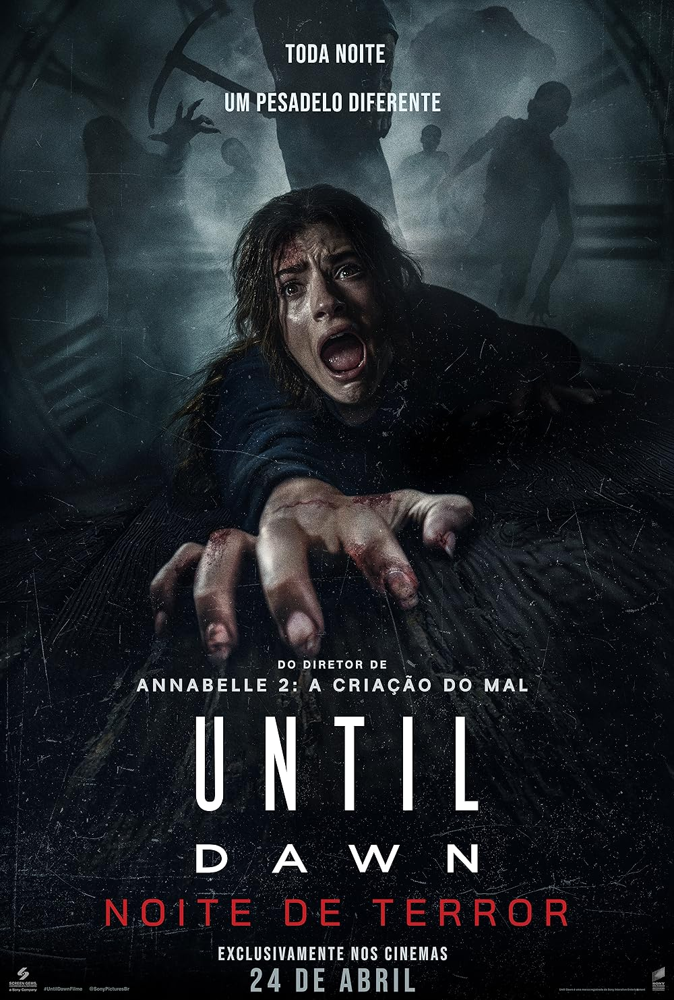
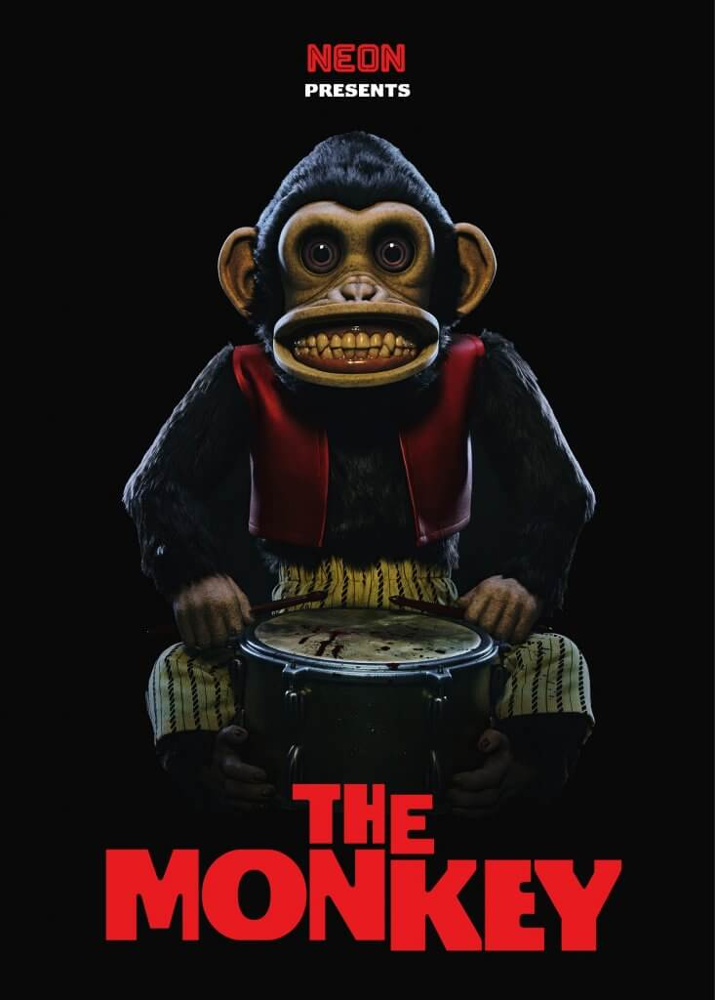

Explorando um centro de visitantes abandonado, Clover e seus amigos encontram um assassino mascarado que os mata um por um. No entanto, quando eles misteriosamente acordam no início da mesma noite, são forçados a reviver o terror repetidamente.

Irmãos gêmeos encontram um misterioso macaco de corda. Após a descoberta, uma série de mortes absurdas destroça a família. Muitos anos depois, o macaco inicia uma nova onda de assassinatos, forçando os irmãos a enfrentarem o brinquedo amaldiçoado.
No Freddy Fazbear's Pizza, robôs animados fazem a festa das crianças durante o dia. Quando chega a noite, eles se transformam em assassinos psicopatas.